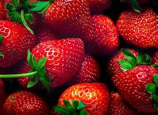

les fleur du fraisier des bois sont blanches
|
Fragaria vesca,le fraisier des bois,est une espéce sauvage.pour la culture,il s'agit souvent de prélévement d'individus sauvages.cependant,des variétés améliorées sont proposées à la vente par les spécialistes.il est tolérant à la chaleur et à la sécheresse mais pour une bon production, il préfére un sol frais,plutot acide et une exposition ensoleillée. trés résistant au froid, il craint cependant les gelées printaniéres.
La Fraise des Bois sont sauvent de petite taille

|
Le fraisier des bois peut étre facilement confondu avec d'autres espéces de fraisiers:
fraisant depuis longtemps l'objet de cueillette dantles bois,cette plante était utilisée comme teinture, aliment ou pour ses vertus médicinales(décoctions,tisanes,sirops,onguents detoute les partiesde la plante:les romains en faisaient des masques de beauté).elle est introduite et cultivée dans les jardins européens vers le XIVe siécle pour ses vertus curatives ou pour étre mangée.
Quand il a poussé sur un soi pollué,fraisier fait partie des plantes qui peuvent avoir accumulé de l'arsenic, sous toutes ses formes(l'arsrnic a été beaucoup utilisé comme pesticide, notamment en Amérique du nord ou il l'est encore abondamment sur les terrains de golf sous forme de méthanearséniate monosodique(MSMA))
les fleur du fraisier des bois sont blanches
|
Les principaux consommateurs des fraises sont les mammifères carnivores tels que les renards. Ils peuvent
transmettre l'échinococcose au travers de leurs déjections. Il faut éviter de consommer les fraises crues en
provenance du milieu sauvage.
La bonne connaissance de son génome et son cycle court de génération (12-16 semaines) en font un modèle
pour l'étude des rosaceae
Sous l'herbe, pour que tu la cueilles,
II met la fraise au teint vermeil,
Et te tresse un chapeau de feuilles
Pour te garantir du soleil.
Puis, lorsque sa besogne est faite,
Et que son règne va finir,
Au seuil d'avril tournant la tête,
Il dit: "Printemps, tu peux venir!"
.jpg)